衣橱与新道具
衣橱（光环、拖尾、武器皮肤、花环、 背饰）、茶托盾与茶筅短刃、星渊补给、生活工具、宠物项圈与零食、社交道具
这一页收的是茶屋这批新上的道具：👘 衣橱（所有外观一个入口）、星渊新装备与补给、补专精空位的生活工具、🎀 宠物项圈与零食，以及和朋友玩的社交道具。老道具（工坊配方、小吃、神器、饰品）见 配方与道具图鉴和 工坊 · 锻造。
👘 衣橱 /yichu
/yichu（别名 /wardrobe、/衣橱），或 /shezhi 个人设置里的 👘 衣橱。以前的「✨ 个人特效」页已经并进衣橱。
- 买和穿分开：东西还在原来的店买（四季庆典馆、星辉兑换所、福气小铺、公会商店……），买了永久解锁；穿、换、摘都在衣橱。
- 每页列出全部款式：已拥有的点一下穿上 / 摘下；没拥有的写着在哪买，点一下直接带你去那家店。
- 光环、拖尾每类同时只能开一种，可以全部关掉。
| 分页 | 内容 | 从哪来 |
|---|---|---|
| ✨ 光环 | 四种庆典光环（一次一个）+ 🌸 樱花飘落；公会光环「🌸 樱花旋舞」「金秋落叶」也在这里戴 | 庆典光环在四季庆典馆（6800 / 8800 / 10800 / 16800 币）；樱花飘落是福气商店「樱花气象仪」（300 福气值）；公会光环见 公会 |
| 🌠 拖尾 | ✨ 星尘（按天数）、🌸 樱花瓣、🏮 千灯萤火 | 星渊星辉兑换所，见 星渊秘境 |
| ⚔ 武器皮肤 | 🌸 樱夜星刃、💜 晶窟月斧：「套到主手武器上」/「恢复原样」 | 锻造坊解锁（锻造坊里的「套皮肤」按钮会跳到这里）；皮肤认主人，交给别人自动恢复原样 |
| 🎩 帽饰 | 🌸 花环：樱花与小白花编的花环，幻化到你的头盔上（只改样子，属性、附魔、星级都不变；没戴头盔也能单独戴），所有人都看得到 | 四季庆典馆 👘 配饰柜，春季限定 4,000 币（明年春天返场，买了永久保留）；或公会商店 4,500 贡献（公会 Lv7） |
| 背饰 | 背饰：🌸 樱瓣羽翼、🐉 墨骨龙翼，背在身后慢慢扇，走路时收到身后；可以和花环一起戴。详见下面 背饰 | 每人免费二选一领一副（就在这一页领）；另一副在锦鲤许愿池 · 福气值荣誉商店换，350 福气值 |
| ⚙ 设置 | 🙈 隐藏别人的特效（别人的光环 / 拖尾粒子不显示，照顾低配电脑；不影响背饰） | — |
拖尾也能用 /xy trail stardust|sakura|lantern|off 快速切换。萌宠光环带增益、跟着宠物走，不在衣橱里。
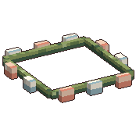
背饰
衣橱第一行的 背饰 分页（也可以直接输 /yichu back）。背饰是真正长在背上的 3D 模型：站着时慢慢扇动，走路、跑步时往后收，潜行时跟着身体前倾，骑马、跳跃、被击退都贴着后背，不会拖在后面飘。
| 款式 | 样子 | 怎么拿 |
|---|---|---|
| 🌸 樱瓣羽翼 | 三层樱瓣羽毛的小翅膀 + 梅紫蝴蝶结，慢慢扇，走路时收到身后 | 🎁 每人免费二选一领一副；另一副：锦鲤许愿池 · 福气值荣誉商店，350 福气值 |
| 墨骨翠膜龙翼 + 金框龙玉，慢慢扇动，走路时收到身后 |

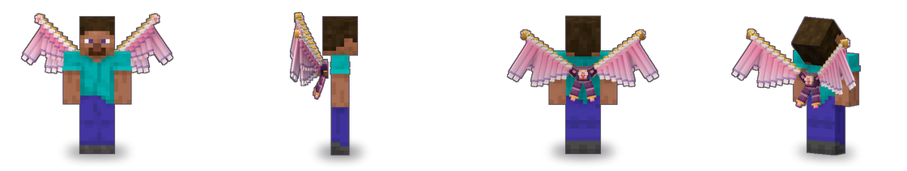

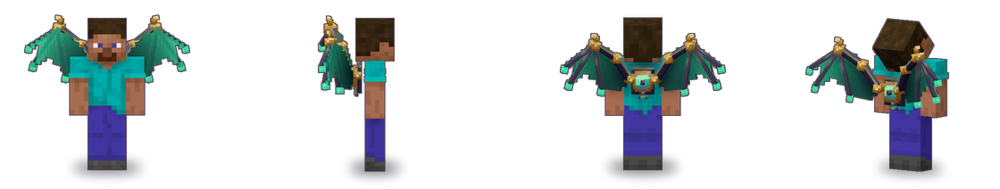
🎁 免费领一副（二选一）
- 打开
/yichu→ 背饰。第一格「🎁 翅膀二选一 · 免费领一次」写着你领没领过。 - 点想要的那一副，按钮会变成「再点一次确认领取」；10 秒内再点一次才算领（防手滑）。
- 领到后马上戴上，永久拥有。

选定后不能改
免费领取每人只有一次，按账号记录：领了樱瓣就不能换成龙翼，也不能再领第二副。两副都想要，另一副去福气值荣誉商店换。
🍀 另一副：福气值荣誉商店 350 福气值
/pool shop（锦鲤许愿池 → 福气值荣誉商店）里，第二行「返回」两边就是两副背饰：左边樱瓣羽翼、右边墨骨龙翼。- 要先免费领过一副才能换；没领过时点它会带你回衣橱去领。
- 点一下显示价格和你的福气值，再点一次确认扣 350 福气值，换到后马上戴上。福气值怎么攒见 锦鲤许愿池与福气值。
- 在衣橱里点还没拥有的那一副，也会直接打开这家店。
穿、换、摘
- 两副都有时，在 背饰页点哪副就戴哪副（同时只能背一副），再点正在戴的那副就摘下。摘下不会丢，随时再戴。
- 背饰和 🎩 花环、光环、拖尾都能一起戴。
- 别人都看得到你的背饰。⚙ 设置里的「隐藏别人的特效」只管光环 / 拖尾粒子，不会隐藏背饰。
🪞 自己看不看得到
背饰默认对你自己隐藏（别人照常看得到）：第一人称偏头、低头时背饰会挡进画面，所以默认关。
- 因为背饰是挂在你身上的，对自己隐藏后，按 F5 第三人称也看不到自己的背饰——这是正常的，不是没戴上。
- 想在 F5 里看自己，在 背饰页打开最后一格 「🪞 自己也看得到翅膀」（默认关，开关会记住）。开着时第一人称偏头可能看到背饰。
- F5 看自己时背饰转身会比身体慢一点点（你的身体在本地马上转，背饰要等服务器）；别人看你是同步的。
什么时候会自动收起
身体横过来或看不见时，背饰会收起来，姿势恢复后自动展开：
- 🏊 游泳（贴水面游）、🪂 鞘翅滑翔、🔱 激流三叉戟冲刺、🛏 睡觉；
- 💀 死亡（重生后自动回来）、🧪 隐身药水、👻 旁观模式；
- 换世界、传送到别的世界时会先收起，到了新位置马上重新长出来。
⚔ 星渊新装备
这些装备只在星渊秘境里生效，在野外照原版。战斗机制（格挡、弹反、翻滚、韧性）见 星渊秘境。
🛡 茶托盾（副手，三档）
在锻造坊「饰品与打造」页打造，拿在副手举盾。升档是在原来那面盾上改，附魔、耐久、星级都保留。原版盾照样能用。
| 档位 | 材料 | 效果 |
|---|---|---|
| 🎋 竹编茶托 | 锻造合金 ×4 + 竹子 ×32 | 举盾格挡扣的体力 15 → 12；格挡时「笃」一声竹响 |
| 🏺 青瓷茶托 | 竹编茶托 + 锻造合金 ×8 + 首领晶核 ×1 | 完美弹反窗口 0.25 → 0.30 秒；完美弹反「叮」一声瓷响、溅出茶水，回 1 颗心 |
| ✨ 星辉茶托 | 青瓷茶托 + 星渊晶核 ×1 + 符文碎片 ×20 | 同青瓷；每次完美弹反盾面亮 1 颗星，亮满 3 颗后下一记重击放出一道星光斩（伤害 = 这记重击 × 0.5，沿直线打 8 格） |
🗡 茶筅短刃（快攻近战）
- 获取：星辉兑换所，星辉徽章 ×12。
- 手感：攻击力 4.2（约银河刃六成）、攻速 2.4（剑是 1.6），每刀破韧 ×1.3；重击体力 20 → 10。
- 泡沫与「打茶」：连续命中 5 刀积满泡沫（刀身冒白泡），下一刀变「打茶」——原地转一圈，2.5 格内其他怪受到这一刀 × 0.6 的伤害并被轻轻击退。
- 适合：喜欢快速破韧、打处决的人。
饰品（占现有槽位，不开新槽）
戴进 /accessory 饰品匣。
| 饰品 | 槽 | 效果 | 获取 |
|---|---|---|---|
| 📿 守夜手串 | 戒指 | 翻滚无敌 0.35 → 0.40 秒；用翻滚躲开攻击亮 1 颗珠，亮满 3 颗后下次翻滚原地留一个灯影 1.5 秒，把 10 格内的普通怪 / 精英引过去（首领不吃） | 锻造坊饰品页：首领晶核 ×1 + 符文碎片 ×15 |
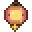 🏮 引路灯坠 | 护符 | 进新房间时，一盏小纸灯笼从你身边飘向最近的星尘堆 / 宝箱 / 趣味房机关（不给数值，只帮你不迷路） | 星辉兑换所：星辉徽章 ×6 |
| 🍵 余温茶盏 | 护符 | 喝随身茶壶后 3 秒内受到的伤害 −15%，身上冒热气 | 工坊 🧺 小作台：★★★ 金星茶饮 ×3 + 粘土球 ×8（身上要有 🫖 大师茶釜，不消耗） |
🧪 星渊补给
| 补给 | 效果 | 获取 |
|---|---|---|
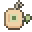 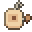 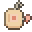 🫖 星露冲泡包（三种口味） | 在守夜茶炉旁装进随身茶壶，本轮每口茶附带：🌿 薄荷 = 之后 20 秒体力回复 +30%；🍂 焙茶 = 顺带解掉中毒、减速和寒霜；🌸 樱花 = 多回 2 颗心。一轮只能装一种，茶壶蒸汽颜色跟着变 | 茶屋工坊右下角现场冲：🌿 薄荷 = 盛夏薄荷嫩叶 ×1 + 茶饮 ×1；🍂 焙茶 = 茶饮 ×2；🌸 樱花 = 盐渍樱花瓣 ×1 + 茶饮 ×1（「茶饮」= 工坊茶饮冲泡类任一成品） |
| 🍙 夜市饭团 | 星渊里回 4 颗心，吃得快不僵直；一轮限 1 个。野外吃 = 饱和 | 茶屋食谱 /kitchen 第 7 道：小麦 + 干海带 + 熟鲑鱼 |
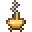 🔥 驱暗香 | 点燃后 60 秒内，本房间带「👻 隐匿」词条的怪显形 | 星渊行脚商人 ✦150 星尘（本轮有效） |
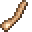 🪃 回旋茶匙 | 右键丢出、6 格后飞回；打中小怪 / 精英能打断正在蓄的前摇（每只怪 8 秒内只能被打断一次，首领免疫），伤害很低。飞回来时你正好接住，冷却清零，能连扔 | 星渊行脚商人 ✦400 星尘（只有一部分商人带，本轮有效，离开秘境消失） |
 🎐 风铃护身符 🎐 风铃护身符 | 本轮第一次死亡不掉星尘（不是复活，照样回茶屋），用掉 1 枚 | 锦鲤许愿池福气值荣誉商店，40 福气值，每周限 1 |
🌾 生活工具
都走「多掉材料 / 多一点品质」，不直接给钱。
| 工具 | 对口 | 效果 | 获取 |
|---|---|---|---|
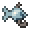 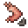 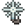 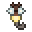 🎣 星河拟饵（溪 / 海 / 冰 / 夜） | 钓鱼 | 装在副手：对应水域的鱼咬钩权重 ×1.3，用 20 次；浮漂上骑一个小拟饵 | 商业街 → 老渔夫渔具行，60 币 / 个 |
| 🖼 昆虫标本框 | 捕虫 | 把一只金星以上的虫装裱成挂墙家具，昆虫图鉴里那只虫标「🖼 已装裱」 | 柚子家具馆，300 币 |
| 💧 樱露喷壶 | 农耕 | 甘露浇水壶的升级：3×3 浇水，喷过的当季作物收获品质 +0.03（和小蜜蜂项圈合计封顶 +0.05） | 工坊 🧺 小作台：甘露浇水壶 ×1 + 四季香料各 1（樱花瓣 / 薄荷 / 桂花蜜 / 肉桂） |
| 🪧 牧场名牌 | 牧场 | 给一只牧场动物起名挂牌：好感上限 +10%（挂牌人能喂到 550），你靠近时它会朝你走两步。萌宠不能挂 | 牧场菜单 /ranch，120 币 |
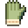 🧤 采集手套 | 采集 | 拿在手上采浆果 / 发光浆果 / 花丛时 15% 多 1 份（只对天然方块） | 工坊 🧺 小作台，600 币 |
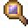 🔍 寻晶镜 | 挖矿 | 右键扫描身边 8 格的天然矿石：有藏着晶洞的矿，镜片发光、越近「嘀」得越快，挖开那块必出晶洞；冷却 60 秒 | 商业街 → 矿石补给，1,500 币（身上要有 🌟 星辉矿工头灯） |
工坊的 🧺 小作台在茶屋工坊 /brew 菜单里进。
🎀 宠物项圈与零食
萌宠乐园 /pet → 🎀 项圈与零食。每只萌宠一款项圈，400 币，买了永久（宠物要先解锁）。戴上后宠物身上会挂一个 3D 小饰物（蜂蜜罐、羽毛领、胡萝卜挂件、铃铛、围巾、泡泡圈戴在脖子上，星星发夹、竹叶帽、荷叶伞戴在头顶，坐下、体型变小时也跟着贴合），并获得一个只在跟随时生效的小被动（同时只能跟 1 只）：
| 萌宠 | 项圈 | 被动 |
|---|---|---|
| 🐝 小蜜蜂 | 蜂蜜罐 | 跟随时 8 格内收的作物品质 +0.03（不催熟；和樱露喷壶合计封顶 +0.05） |
| 🦜 小鹦鹉 | 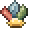 羽毛领 | 学你最近一句聊天说一遍（纯趣味） |
| 🐰 垂耳兔 | 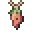 胡萝卜挂件 | 跳跃高度 +0.5 格（只在主城 / 庄园） |
| 🐱 三花猫 | 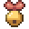 铃铛 | 钓鱼上鱼时猫会凑过来看；10% 这条鱼在图鉴里多记一次（只加图鉴进度，不多给鱼） |
| ✨ 小悦灵 | 星星发夹 | 帮你捡 4 格内属于你的掉落物 |
| 🦊 小狐狸 | 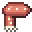 围巾 | 夜里附近有稀有虫时会朝那个方向看、竖起耳朵 |
| 🐼 小熊猫 | 竹叶帽 | 吃小吃的增益时长 +10% |
| 🐸 雨蛙 | 荷叶伞 | 下雨天钓鱼咬钩快 5% |
| 🦎 六角恐龙 | 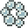 泡泡圈 | 在水里时获得潮涌能量（水下挖得快、看得清） |
🍪 宠物零食
在工坊 🧺 小作台烤（一次 2 个），到 🎀 项圈与零食里喂一次，萌宠就学会一个动作，之后在这里点动作它就做。每只萌宠都会，纯趣味。
| 零食 | 配方 | 学会 |
|---|---|---|
| 🍪 转圈小饼干 | 小麦 ×2 + 可可豆 ×1 | 🌀 原地转三圈 |
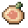 🥕 胡萝卜酥 | 胡萝卜 ×2 + 小麦 ×1 | 🛌 坐下、打个滚 |
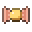 🍯 蜂蜜跳跳糖 | 蜂蜜瓶 ×1 + 糖 ×2 | 🦘 高高跳起来 |
🎉 社交道具
| 道具 | 怎么用 | 获取 |
|---|---|---|
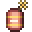 🎆 茶屋烟花筒 | 右键放一束茶屋图案烟花（用掉 1 支）；Shift+右键换图案：鼠鼠 / 樱花 / 茶杯；对空中左键开 / 关全服公告（每人每天只公告 1 次，只在主世界） | 四季庆典馆，200 币 / 支 |
| 📸 合影牌 | 2 个人以上站在一起（5 格内），一人右键：每人各得一块挂墙「合影牌」，写着在场所有人的名字、日期和地点 | 柚子家具馆，500 币 |
| 💌 茶屋信笺 | 身上带一张，/xinjian 玩家 想说的话 写给某人；对方下次上线时弹出并收进信匣，可以回信。只传文字、不带物品 | /xinxia 信匣里买，30 币 / 张 |
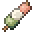 🍡 分享团子 | 右键分给 4 格内的玩家，大家各得 5 分钟速度 I + 幸运 I（不叠加） | 工坊 🧺 小作台：小麦 ×3 + 甜浆果 ×2 + 糖 ×1（一次 2 串） |
指令
| 指令 | 作用 |
|---|---|
/yichu（/wardrobe /衣橱） | 打开衣橱 |
/yichu back | 直接打开衣橱 背饰页（免费领背饰、穿 / 换 / 摘、🪞 自己看得到开关） |
/pool shop | 福气值荣誉商店（另一副背饰 350 福气值） |
/xinjian 玩家 话（/letter /信笺） | 写一封茶屋信笺（身上要带一张） |
/xinxia（/mailbox /信匣） | 信匣：看收到的信、买信笺 |
/accessory | 饰品匣（守夜手串、引路灯坠、余温茶盏戴在这里） |
常见问题
花环过了春天还能买吗？
庆典馆只在春季卖，明年春天返场；已经买的永久保留。公会 Lv7 的公会商店也能用 4,500 贡献换一次。
领错背饰了，能换吗？
不能。免费的那副每人只能领一次、选定不能改。另一副可以在 /pool shop 用 350 福气值换，两副都有后在衣橱里随便换着戴。
戴了背饰，自己怎么看不到？F5 也看不到？
背饰默认对自己隐藏（防止第一人称挡视线），F5 也跟着看不到，别人是看得到的。在 /yichu back 打开「🪞 自己也看得到翅膀」就行。
背饰突然没了？
游泳、鞘翅滑翔、激流冲刺、睡觉、隐身、旁观、死亡时背饰会自动收起，恢复后自己回来；换世界时会在新位置重新长出来。
茶托盾 / 茶筅在野外有用吗？
这些效果只在星渊里生效，野外按原版盾 / 原版武器算。
项圈能同时戴几个？
每只萌宠一款，但同时只能跟 1 只萌宠，所以只有跟着你的那只的被动生效。